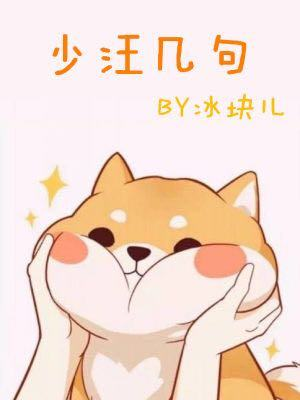

El tirano omega de la escuela, conocido legendariamente como "Yan Ge", se acerca el calor de Jiang ShaoYan. Pensó que no tenía otra opción más que buscar un alfa más fuerte que él para superarlo, pero de repente apareció un estudiante de primer año diciendo que le gustaba. Espera, espera, espera, ¿tienes feromonas tan débiles y te atreves a coquetear con este Ge? Este Wang no es tan tonto, ¿verdad?